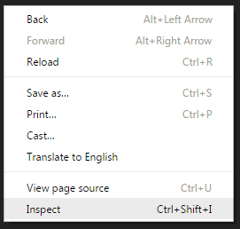

Web Mapping 101
covering:
- elements of a JS application
- JS map APIs
- best practise guidelines
- debugging
- Web AppBuilder
There has never been a more exciting time...
JS mapping APIs, browsers & debugging tools
are all mature and reliable
Elements of a JavaScript map
ArcGIS sandbox environment
NB: examples do not illustrate best practice
Choosing a mapping API
LeafletJS
ArcGIS Server JS

Data types
Feature layer
point, line or polygon, downloaded to the client browser
Tiled layer
pre-cached images using nested tiles
Dynamic layer
images rendered on the server at run-time
Events
Respond with an action when an event occurs
Debugging
ArcGIS Web AppBuilder
- ready to use out-of-the-box*
- collection of widgets built-in
- more widgets shared by users
* but remember the 80/20 rule
Local Layer widget
- Web AppBuilder expects data to be stored in ArcGIS Online or Portal for ArcGIS
- use Local Layer widget to define layers directly from ArcGIS Server:
Example - Motor Supplier Footprint map

- explore Leaflet and ArcGIS demos
- experiment with building a map
- ask for assistance